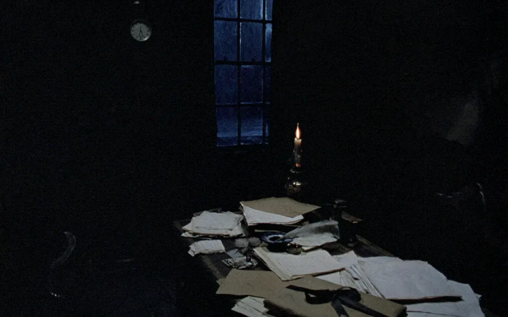
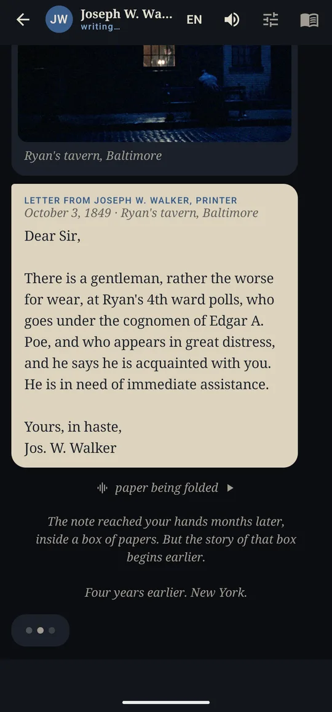
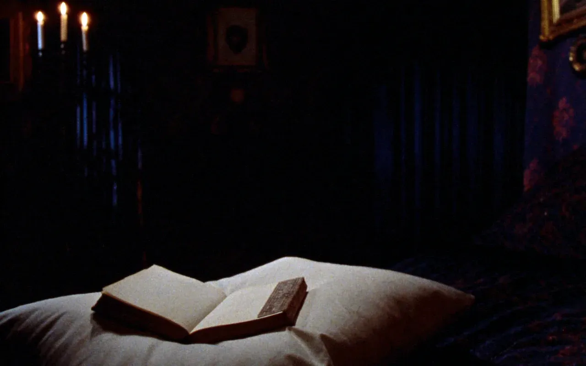
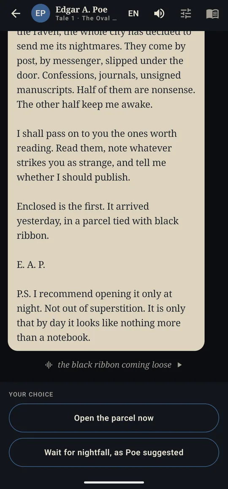
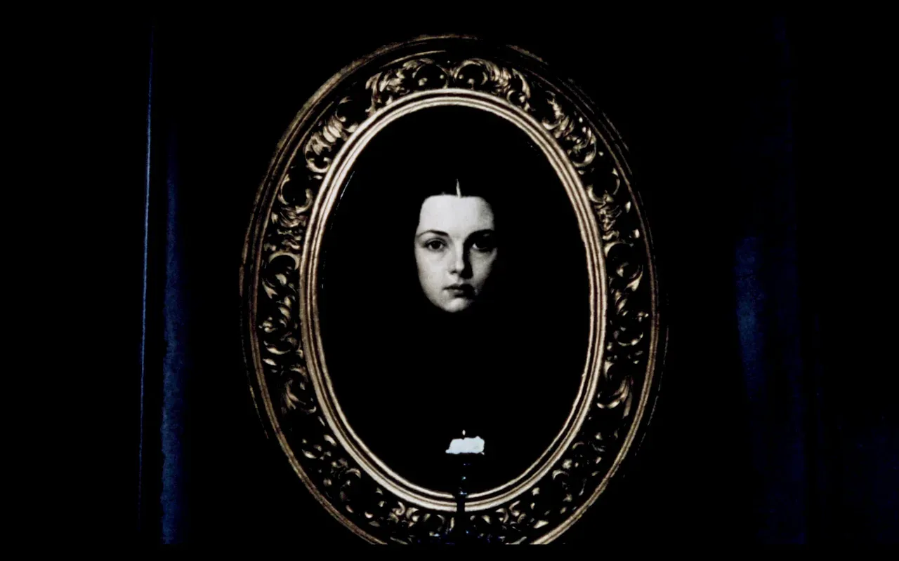
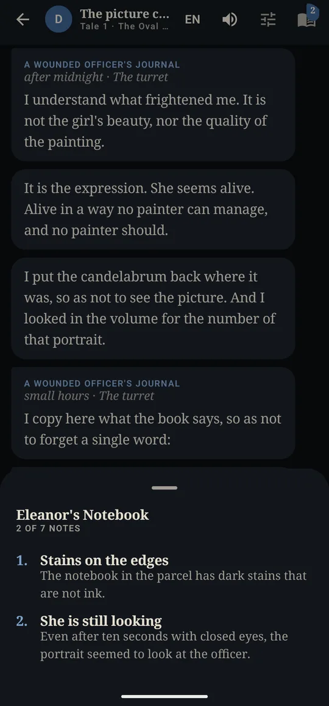
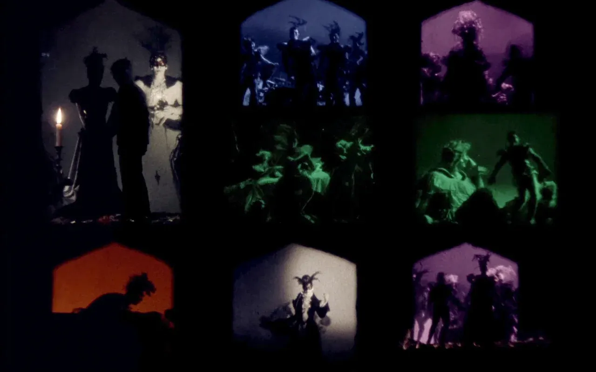
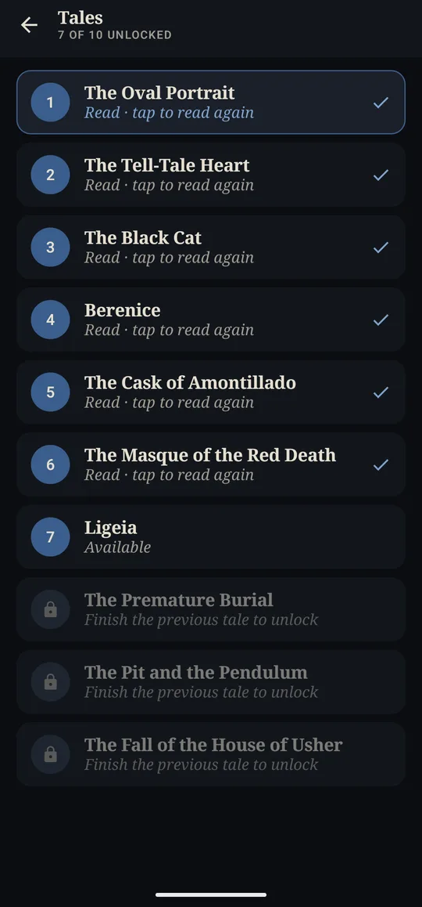
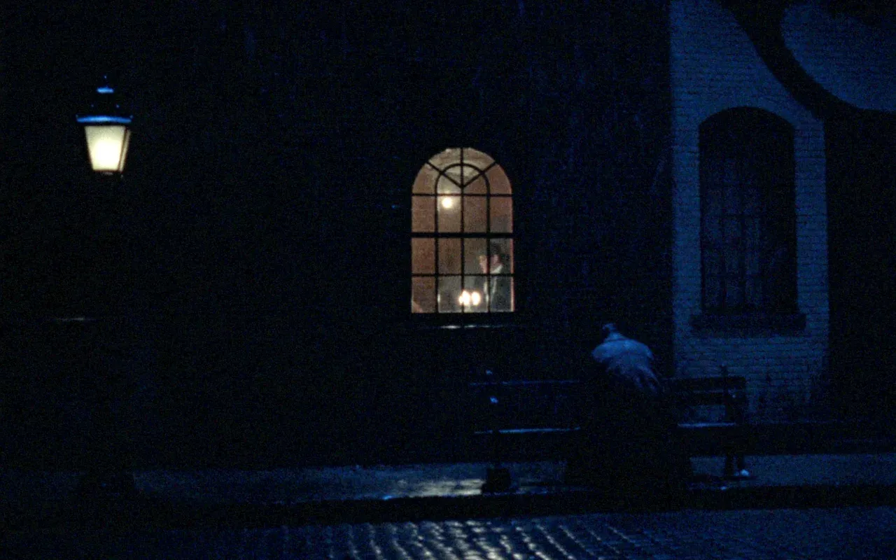

1845 · NEW YORK
It arrives as messages
You are Eleanor Gray, Poe's assistant at the Broadway Journal. The manuscripts he receives, his letters and notes from strangers arrive one by one, at the pace you choose.


A PARCEL TIED IN BLACK RIBBON
The choice is yours
Poe suggests opening the parcel only at night. Open it now or wait? At certain moments you decide what Eleanor does. Your choice changes what you see, never the tale Poe wrote.


ELEANOR'S NOTEBOOK
Note whatever seems strange
Stains on the edge of a notebook, seven candles on the judges' table. The clues go into Eleanor's notebook, and some only show up for those who take the other path.


FROM NEW YORK TO BALTIMORE
10 tales, 47 illustrations
The Tell-Tale Heart, The Black Cat, The Cask of Amontillado, The Masque of the Red Death, The Pit and the Pendulum, The Fall of the House of Usher and four more, with cello, glass harmonica, rain and a raven at the window. The first tales are free; a single purchase unlocks the whole book.


“All that we see or seem is but a dream within a dream.”Edgar Allan Poe
The first tales are free
See it on Google Play